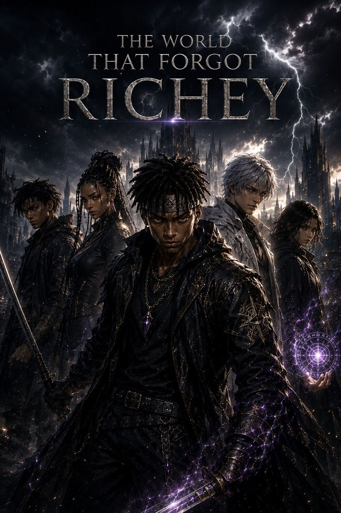
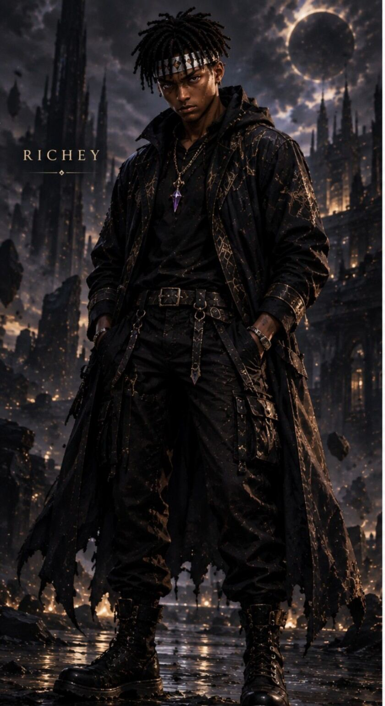
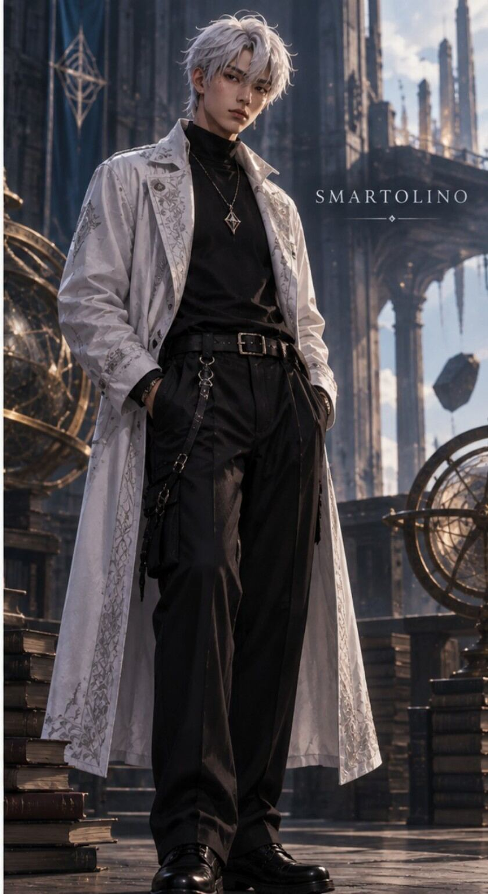

CHAPTER 1
The Boy the World Forgot
Power System: Echo Path
A boy who lost everything begins a journey to discover the truth behind his forgotten past.

Power System: Echo Path

The survivor carrying Veyra and his mother's mysterious pendant.

Richey's mysterious companion with an extraordinary calculating mind.
They say some memories are meant to be forgotten. But Richey's past was never truly gone.
Richey stands among the ruins of a burning kingdom.
Years ago, the Adeyemi family possessed a forbidden bloodline. A power so dangerous that even kings feared its awakening.
Richey's mother, Mira, places a mysterious pendant in his hand.
Mira: “Richey, keep this with you. One day, when everything seems lost, it may save your life.”
Young Richey: “Why are you giving this to me, Mom?”
Mira: “Because some things are better understood when you're older.”
King Pelumi sits upon his throne.
Pelumi: “The Adeyemi bloodline must disappear before its power awakens.”
Soldier: “And the boy?”
Pelumi: “Leave no survivor.”
The Adeyemi realm had no idea that an army was already marching toward its gates.
That night, the war began.
Mira: “Take Richey! Now!”
Richey's Father: “I will protect him.”
Father: “Forgive me, my son.”
Richey is sealed away.
His father sacrificed everything to hide him from the king.
The seal disappears. Richey wakes up.
Richey: “Mom?”
Silence.
Richey: “Dad?”
He sees the burning ruins.
Richey: “Where are you?!”
Richey discovers the symbol of King Pelumi's kingdom.
Richey: “Pelumi...”
Richey: “You took everything from me.”
The pendant begins glowing.
But Richey didn't know that his mother's gift was hiding something far greater than protection.
Richey: “What... is happening to me?”
“I don't know where you are...”
“I don't know why this happened...”
“But I swear...”
“I will find the truth.”
That day, a boy who had lost everything began a journey that would eventually shake the entire universe.
His name was Richey Adeyemi.
After leaving the ruins of his home, Richey spent days searching for answers.
Smartolino: “You're Richey Adeyemi, aren't you?”
Richey: “Who told you my name?”
Smartolino: “Nobody. I figured it out.”
Richey: “That's not an answer.”
Smartolino: “You'll learn that I rarely give simple answers.”
Smartolino suddenly becomes serious.
Smartolino: “We're being followed.”
A shadow moves through the forest.
Opidex: “Richey Adeyemi.”
Richey: “How do you know my name?”
Opidex: “Because your existence has been causing problems for a very long time.”
Opidex: “Give me the weapon.”
Richey: “Come and take it.”
Richey draws Veyra.
CLANG!
Opidex touches Veyra.
CRACK!
Richey: “What did you do?!”
Opidex: “I found its weakness.”
Smartolino: “Thirty-two possible attacks.”
Richey: “Which one works?”
Smartolino: “None.”
Richey: “Then why are you standing there?!”
Smartolino: “Because I'm looking for the one that hasn't happened yet.”
Smartolino: “He doesn't want to kill you.”
Richey: “Then what does he want?”
Smartolino: “Your weapon.”
Smartolino: “Throw Veyra.”
Richey: “Are you crazy?”
Smartolino: “Trust me.”
Richey throws Veyra. Opidex immediately goes for it.
Smartolino: “Now!”
Richey touches an ancient Echo.
For the first time, Richey didn't simply see an Echo.
He touched it.
An ancient structure appears.
Opidex: “Impossible...”
The Echo collapses.
Smartolino: “RUN!”
Opidex: “So you really can touch the Forgotten.”
Opidex: “King Pelumi was right.”
Richey and Smartolino reach Veyra City.
Richey: “Who is Pelumi?”
Everyone turns toward Richey.
Crowd: “We remember you.”
Richey thought he was searching for his past.
He didn't realize his past had already found him.
Richey's arrival in Veyra City raises questions that may connect directly to his forgotten past.
Back to All Stories